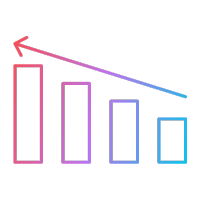
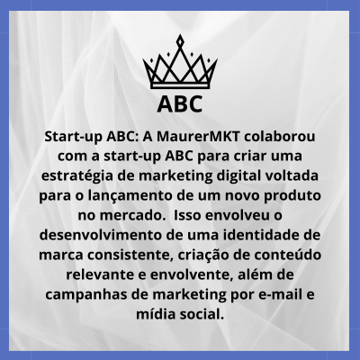
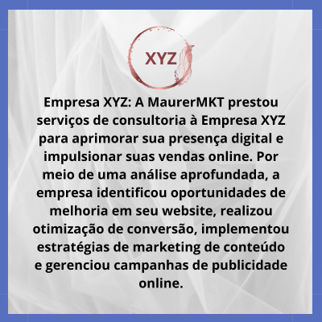

Conheça a MaurerMKT
Sua parceira estratégica em marketing digital. Somos uma empresa apaixonada por
resultados, conectando marcas ao sucesso online. Nossa equipe experiente e especializada
oferece soluções personalizadas em SEO, mídia social, publicidade online, criação de
conteúdo e análise de dados. Com foco no cliente, trabalhamos para melhorar a visibilidade
das marcas nos mecanismos de busca, aumentar o tráfego orgânico e alcançar resultados
eficazes nas redes sociais. Seja qual for o objetivo e o orçamento, a MaurerMKT está pronta
para ajudar a impulsionar o sucesso online de sua marca.


